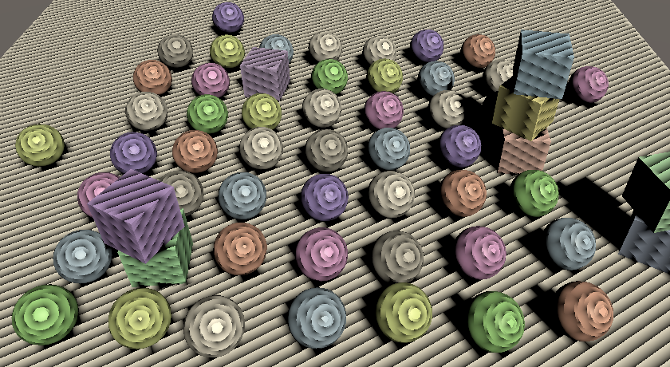
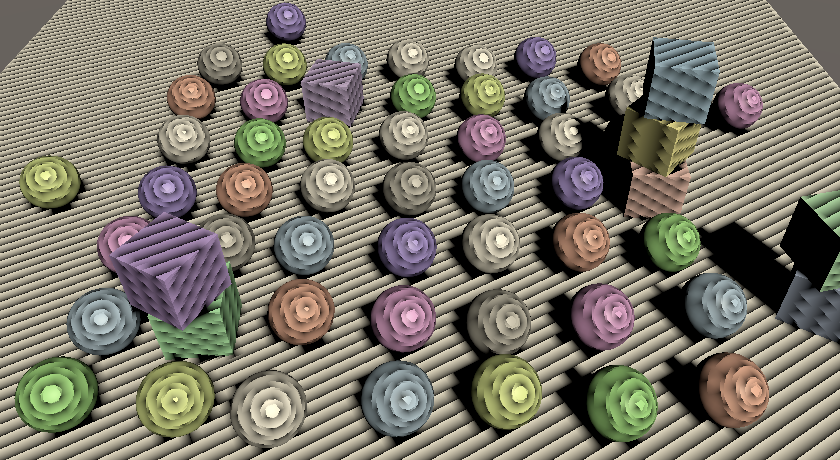
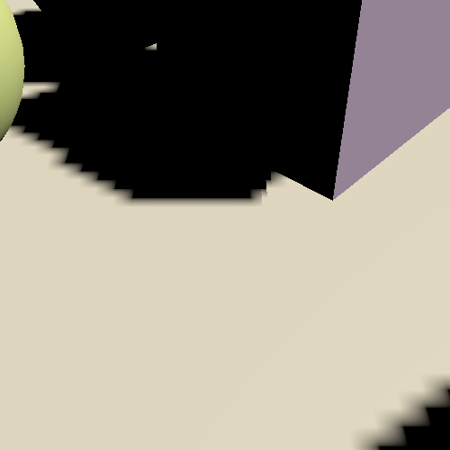
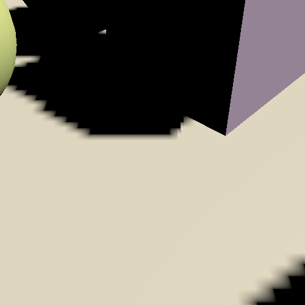

Directional Shadows
Cascaded Shadow Maps
- Render and sample shadow maps.
- Support multiple shadowed directional lights.
- Use cascaded shadow maps.
- Blend, fade, and filter shadows.
This is the fourth part of a tutorial series about creating a custom scriptable render pipeline. It adds support for cascaded shadow maps.
This tutorial is made with Unity 2019.2.14f1.
Rendering Shadows
When drawing something the surface and light information is enough to calculating lighting. But there could be something in between both that blocks the light, casting a shadow on the surface that we're drawing. To make shadows possible we have to somehow make the shader aware of the shadow-casting objects. There are multiple techniques for this. The most common approach is to generate a shadow map that stores how far light can travel away from its source before hitting a surface. Anything further away in the same direction cannot be lit by that same light. Unity's RPs use this approach and so will we.
Shadow Settings
Before we get to rendering shadows we first have to make some decisions about quality, specifically up to how far away we will render shadows and how big our shadow map will be.
While we could render shadows as far as the camera can see, that would require a lot of drawing and a very large map to cover the area adequately, which is almost never practical. So we'll introduce a maximum distance for shadows, with a minimum of zero and set to 100 units by default. Create a new serializable ShadowSettings class to contain this option. This class is purely a container for configuration options, so we'll give it a public maxDistance field.
using UnityEngine;
[System.Serializable]
public class ShadowSettings {
[Min(0f)]
public float maxDistance = 100f;
}
For the map size we'll introduce a TextureSize enum type nested inside ShadowSettings. Use it to defined the allowed texture sizes, all being powers of two in the 256—8192 range.
public enum TextureSize {
_256 = 256, _512 = 512, _1024 = 1024,
_2048 = 2048, _4096 = 4096, _8192 = 8192
}
Then add a size field for the shadow map, with 1024 as its default. We'll use a single texture to contain multiple shadow maps, so name it atlasSize. As we only support directional lights for now we also exclusively works with directional shadow maps at this points. But we'll support other light types in the future, which will get their own shadows settings. So put atlasSize inside an inner Directional struct. That way we automatically get an hierarchical configuration in the inspector.
[System.Serializable]
public struct Directional {
public TextureSize atlasSize;
}
public Directional directional = new Directional {
atlasSize = TextureSize._1024
};
Add a field for the shadow settings to CustomRenderPipelineAsset.
[SerializeField] ShadowSettings shadows = default;
Pass these settings to the CustomRenderPipeline instance when it gets constructed.
protected override RenderPipeline CreatePipeline () {
return new CustomRenderPipeline(
useDynamicBatching, useGPUInstancing, useSRPBatcher, shadows
);
}
And make it keep track of them.
ShadowSettings shadowSettings;
public CustomRenderPipeline (
bool useDynamicBatching, bool useGPUInstancing, bool useSRPBatcher,
ShadowSettings shadowSettings
) {
this.shadowSettings = shadowSettings;
…
}
Passing Along Settings
From now on we'll pass these settings to the camera renderer when we invoke its Render method. That way it would be easy to add support for changing the shadow settings at runtime, but we won't deal with that in this tutorial.
protected override void Render (
ScriptableRenderContext context, Camera[] cameras
) {
foreach (Camera camera in cameras) {
renderer.Render(
context, camera, useDynamicBatching, useGPUInstancing,
shadowSettings
);
}
}
CameraRenderer.Render then passes it to Lighting.Setup and also to its own Cull method.
public void Render (
ScriptableRenderContext context, Camera camera,
bool useDynamicBatching, bool useGPUInstancing,
ShadowSettings shadowSettings
) {
…
if (!Cull(shadowSettings.maxDistance)) {
return;
}
Setup();
lighting.Setup(context, cullingResults, shadowSettings);
…
}
We need the settings in Cull because the shadow distance is set via the culling parameters.
bool Cull (float maxShadowDistance) {
if (camera.TryGetCullingParameters(out ScriptableCullingParameters p)) {
p.shadowDistance = maxShadowDistance;
cullingResults = context.Cull(ref p);
return true;
}
return false;
}
It doesn't make sense to render shadows that are further away than the camera can see, so take the minimum of the max shadow distance and the camera's far clip plane.
p.shadowDistance = Mathf.Min(maxShadowDistance, camera.farClipPlane);
To make the code compile we also have to add a parameter for the shadows settings to Lighting.Setup, but we won't do anything with them just yet.
public void Setup (
ScriptableRenderContext context, CullingResults cullingResults,
ShadowSettings shadowSettings
) { … }
Shadows Class
Although shadows are logically a part of lighting they're rather complex, so let's create a new Shadows class dedicated to them. It starts as a stripped-down stub copy of Lighting, with its own buffer, fields for the context, culling results, and settings, a Setup method to initialize the fields, and an ExecuteBuffer method.
using UnityEngine;
using UnityEngine.Rendering;
public class Shadows {
const string bufferName = "Shadows";
CommandBuffer buffer = new CommandBuffer {
name = bufferName
};
ScriptableRenderContext context;
CullingResults cullingResults;
ShadowSettings settings;
public void Setup (
ScriptableRenderContext context, CullingResults cullingResults,
ShadowSettings settings
) {
this.context = context;
this.cullingResults = cullingResults;
this.settings = settings;
}
void ExecuteBuffer () {
context.ExecuteCommandBuffer(buffer);
buffer.Clear();
}
}
Then all Lighting needs to do is keep track of a Shadows instance and invoke its Setup method before SetupLights in its own Setup method.
Shadows shadows = new Shadows();
public void Setup (…) {
this.cullingResults = cullingResults;
buffer.BeginSample(bufferName);
shadows.Setup(context, cullingResults, shadowSettings);
SetupLights();
…
}
Lights with Shadows
As rendering shadows requires extra work it can slow down the frame rate, so we'll limit how many shadowed directional lights there can be, independent of how many directional lights are supported. Add a constant for that to Shadows, initially set to just one.
const int maxShadowedDirectionalLightCount = 1;
We don't know which visible light will get shadows, so we have to keep track of that. Besides that we'll also keep track of some more data per shadowed light later, so let's define an inner ShadowedDirectionalLight struct that only contains the index for now and keep track of an array of those.
struct ShadowedDirectionalLight {
public int visibleLightIndex;
}
ShadowedDirectionalLight[] ShadowedDirectionalLights =
new ShadowedDirectionalLight[maxShadowedDirectionalLightCount];
To figure out which light gets shadows we'll add a public ReserveDirectionalShadows method with a light and visible light index parameters. It's job is to reserve space in the shadow atlas for the light's shadow map and store the information needed to render them.
public void ReserveDirectionalShadows (Light light, int visibleLightIndex) {}
As the amount of shadowed lights are limited we have to keep track of how many have already been reserved. Reset the count to zero in Setup. Then check whether we haven't reached the max yet in ReserveDirectionalShadows. If there's space left then store the light's visible index and increment the count.
int ShadowedDirectionalLightCount;
…
public void Setup (…) {
…
ShadowedDirectionalLightCount = 0;
}
public void ReserveDirectionalShadows (Light light, int visibleLightIndex) {
if (ShadowedDirectionalLightCount < maxShadowedDirectionalLightCount) {
ShadowedDirectionalLights[ShadowedDirectionalLightCount++] =
new ShadowedDirectionalLight {
visibleLightIndex = visibleLightIndex
};
}
}
But shadows should only be reserved for lights that have any. If a light's shadow mode is set to none or its shadows strength is zero then it has no shadows and should be ignored.
if (
ShadowedDirectionalLightCount < maxShadowedDirectionalLightCount &&
light.shadows != LightShadows.None && light.shadowStrength > 0f
) { … }
Besides that, it's possible that a visible light ends up not affecting any objects that cast shadows, either because they're configured not to or because the light only affects objects beyond the max shadow distance. We can check this by invoking GetShadowCasterBounds on the culling results for a visible light index. It has a second output parameter for the bounds—which we don't need—and returns whether the bounds are valid. If not the there are no shadows to render for this light and it should be ignored.
if (
ShadowedDirectionalLightCount < maxShadowedDirectionalLightCount &&
light.shadows != LightShadows.None && light.shadowStrength > 0f &&
cullingResults.GetShadowCasterBounds(visibleLightIndex, out Bounds b)
) { … }
Now we can reserve shadows in Lighting.SetupDirectionalLight.
void SetupDirectionalLight (int index, ref VisibleLight visibleLight) {
dirLightColors[index] = visibleLight.finalColor;
dirLightDirections[index] = -visibleLight.localToWorldMatrix.GetColumn(2);
shadows.ReserveDirectionalShadows(visibleLight.light, index);
}
Creating the Shadow Atlas
After reserving shadows we need to render them. We do that after SetupLights finishes in Lighting.Render, by invoking a new Shadows.Render method.
shadows.Setup(context, cullingResults, shadowSettings); SetupLights(); shadows.Render();
The Shadows.Render method will delegate rendering of directional shadows to another RenderDirectionalShadows method, but only if there are any shadowed lights.
public void Render () {
if (ShadowedDirectionalLightCount > 0) {
RenderDirectionalShadows();
}
}
void RenderDirectionalShadows () {}
Creating the shadow map is done by drawing shadow-casting objects to a texture. We'll use _DirectionalShadowAtlas to refer to the directional shadow atlas. Retrieve the atlas size as an integer from the settings and then invoke GetTemporaryRT on the command buffer, with the texture identifier as an argument, plus the size for both its width and height in pixels.
static int dirShadowAtlasId = Shader.PropertyToID("_DirectionalShadowAtlas");
…
void RenderDirectionalShadows () {
int atlasSize = (int)settings.directional.atlasSize;
buffer.GetTemporaryRT(dirShadowAtlasId, atlasSize, atlasSize);
}
That claims a square render texture, but it's a normal ARGB texture by default. We need a shadow map, which we specify by adding another three arguments to the invocation. First is the amount of bits for the depth buffer. We want this to be as high as possible, so let's use 32. Second is the filter mode, for which we use the default bilinear filtering. Third is the render texture type, which has to be RenderTextureFormat.Shadowmap. This gives us a texture suitable for rendering shadow maps, though the exact format depends on the target platform.
buffer.GetTemporaryRT( dirShadowAtlasId, atlasSize, atlasSize, 32, FilterMode.Bilinear, RenderTextureFormat.Shadowmap );
When we get a temporary render texture we should also release it when we're done with it. We have to keep hold of it until we're finished rendering with the camera, after which we can release it by invoking ReleaseTemporaryRT with the texture identifier of the buffer and then execute it. We'll do this in a new public Cleanup method.
public void Cleanup () {
buffer.ReleaseTemporaryRT(dirShadowAtlasId);
ExecuteBuffer();
}
Give Lighting a public Cleanup method as well, which forwards the invocation to Shadows.
public void Cleanup () {
shadows.Cleanup();
}
Then CameraRenderer can request cleanup directly before submitting.
public void Render (…) {
…
lighting.Cleanup();
Submit();
}
We can only release a texture if we first claimed it, which we're currently only doing if there are directional shadows to render. The obvious solution is to only release the texture when we have shadows. However, not claiming a texture will lead to problems for WebGL 2.0 because it binds textures and samplers together. When a material with our shader is loaded while a texture is missing it will fail, because it'll get a default texture which won't be compatible with a shadow sampler. We could avoid this by introducing a shader keyword to generate shader variants that omit the shadow sampling code. An alternative approach is to instead get a 1×1 dummy texture when no shadows are needed, avoiding extra shader variants. Let's do that.
public void Render () {
if (shadowedDirLightCount > 0) {
RenderDirectionalShadows();
}
else {
buffer.GetTemporaryRT(
dirShadowAtlasId, 1, 1,
32, FilterMode.Bilinear, RenderTextureFormat.Shadowmap
);
}
}
After requesting the render texture Shadows.RenderDirectionalShadows must also instruct the GPU to render to this texture instead of the camera's target. that's done by invoking SetRenderTarget on the buffer, identifying a render texture and how its data should be loaded and stored. We don't care about its initial state as we'll immediately clear it, so we'll use RenderBufferLoadAction.DontCare. And the purpose of the texture is to contain the shadow data, so we'll need to use RenderBufferStoreAction.Store as the third argument.
buffer.GetTemporaryRT(…); buffer.SetRenderTarget( dirShadowAtlasId, RenderBufferLoadAction.DontCare, RenderBufferStoreAction.Store );
Once that's done we can use ClearRenderTarget the same way we clear the camera target, in this case only caring about the depth buffer. Finish by executing the buffer. If you have at least one shadowed directional light active then you'll see the clear action of the shadow atlas show up in the frame debugger.
buffer.SetRenderTarget( dirShadowAtlasId, RenderBufferLoadAction.DontCare, RenderBufferStoreAction.Store ); buffer.ClearRenderTarget(true, false, Color.clear); ExecuteBuffer();
Shadows First
As we're setting up the regular camera before the shadow atlas we end up switching to the shadow atlas before rendering the regular geometry, which is not what we want. We should render the shadows before invoking CameraRenderer.Setup in CameraRenderer.Render so regular rendering will not be affected.
//Setup();lighting.Setup(context, cullingResults, shadowSettings); Setup(); DrawVisibleGeometry(useDynamicBatching, useGPUInstancing);
We can keep the shadows entry nested inside the camera's in the frame debugger by beginning a sample before setting up lighting and ending the sample immediately after it, before clearing the camera's target.
buffer.BeginSample(SampleName); ExecuteBuffer(); lighting.Setup(context, cullingResults, shadowSettings); buffer.EndSample(SampleName); Setup();

Rendering
To render shadows for a single light we'll add a variant RenderDirectionalShadows method to Shadow, with two parameters: first the shadowed light index and second the size of its tile in the atlas. Then invoke this method for all shadowed lights in the other RenderDirectionalShadows method, wrapped by BeginSample and EndSample invocations. As we're currently supporting only a single shadowed light its tile size is equal to the atlas size.
void RenderDirectionalShadows () {
…
buffer.ClearRenderTarget(true, false, Color.clear);
buffer.BeginSample(bufferName);
ExecuteBuffer();
for (int i = 0; i < ShadowedDirectionalLightCount; i++) {
RenderDirectionalShadows(i, atlasSize);
}
buffer.EndSample(bufferName);
ExecuteBuffer();
}
void RenderDirectionalShadows (int index, int tileSize) {}
To render shadow we need a ShadowDrawingSettings struct value. We can create a properly-configured one by invoking its constructor method with the culling results and appropriate visible light index, which we stored earlier.
void RenderDirectionalShadows (int index, int tileSize) {
ShadowedDirectionalLight light = ShadowedDirectionalLights[index];
var shadowSettings =
new ShadowDrawingSettings(cullingResults, light.visibleLightIndex);
}
The idea of a shadow map is that we render the scene from the light's point of view, only storing the depth information. The result tells us how far the light travels before it hits something.
However, directional lights are assumed to be infinitely far away and thus don't have a true position. So what we do instead is figure out view and projection matrices that match the light's orientation and gives us a clip space cube that overlaps the area visible to the camera that can contain the light's shadows. Rather than figure this out ourselves we can use the ComputeDirectionalShadowMatricesAndCullingPrimitives method of the culling results to do it for us, passing it nine arguments.
The first argument is the visible light index. The next three arguments are two integers and a Vector3, which control the shadow cascade. We'll deal with cascades later, so for now use zero, one, and the zero vector. After that comes the texture size, for which we need to use the tile size. The sixth argument is the shadow near plane, which we'll ignore and set to zero for now.
Those were the input arguments, the remaining three are output arguments. First is the view matrix, then the projection matrix, and the last argument is a ShadowSplitData struct.
var shadowSettings = new ShadowDrawingSettings(cullingResults, light.visibleLightIndex); cullingResults.ComputeDirectionalShadowMatricesAndCullingPrimitives( light.visibleLightIndex, 0, 1, Vector3.zero, tileSize, 0f, out Matrix4x4 viewMatrix, out Matrix4x4 projectionMatrix, out ShadowSplitData splitData );
The split data contains information about how shadow-casting objects should be culled, which we have to copy to the shadow settings. And we have to apply the view and projection matrices by invoking SetViewProjectionMatrices on the buffer.
cullingResults.ComputeDirectionalShadowMatricesAndCullingPrimitives(…); shadowSettings.splitData = splitData; buffer.SetViewProjectionMatrices(viewMatrix, projectionMatrix);
We finally schedule drawing of the shadow casters by executing the buffer and then invoking DrawShadows on the context, with the shadows settings passed to it by reference.
shadowSettings.splitData = splitData; buffer.SetViewProjectionMatrices(viewMatrix, projectionMatrix); ExecuteBuffer(); context.DrawShadows(ref shadowSettings);
Shadow Caster Pass
At this point shadow casters should get rendered, but the atlas remains empty. That's because DrawShadows only renders objects with materials that have a ShadowCaster pass. So add a second Pass block to our Lit shader, with its light mode set to ShadowCaster. Use the same target level, give it support for instancing, plus the _CLIPPING shader feature. Then make it use special shadow-caster functions, which we'll define in a new ShadowCasterPass HLSL file. Also, because we only need to write depth disable writing color data, by adding ColorMask 0 before the HLSL program.
SubShader {
Pass {
Tags {
"LightMode" = "CustomLit"
}
…
}
Pass {
Tags {
"LightMode" = "ShadowCaster"
}
ColorMask 0
HLSLPROGRAM
#pragma target 3.5
#pragma shader_feature _CLIPPING
#pragma multi_compile_instancing
#pragma vertex ShadowCasterPassVertex
#pragma fragment ShadowCasterPassFragment
#include "ShadowCasterPass.hlsl"
ENDHLSL
}
}
Create the ShadowCasterPass file by duplicating LitPass and removing everything that isn't necessary for shadow casters. So we only need the clip-space position, plus the base color for clipping. The fragment function has nothing to return so becomes void without semantics. The only thing it does is potentially clip fragments.
#ifndef CUSTOM_SHADOW_CASTER_PASS_INCLUDED
#define CUSTOM_SHADOW_CASTER_PASS_INCLUDED
#include "../ShaderLibrary/Common.hlsl"
TEXTURE2D(_BaseMap);
SAMPLER(sampler_BaseMap);
UNITY_INSTANCING_BUFFER_START(UnityPerMaterial)
UNITY_DEFINE_INSTANCED_PROP(float4, _BaseMap_ST)
UNITY_DEFINE_INSTANCED_PROP(float4, _BaseColor)
UNITY_DEFINE_INSTANCED_PROP(float, _Cutoff)
UNITY_INSTANCING_BUFFER_END(UnityPerMaterial)
struct Attributes {
float3 positionOS : POSITION;
float2 baseUV : TEXCOORD0;
UNITY_VERTEX_INPUT_INSTANCE_ID
};
struct Varyings {
float4 positionCS : SV_POSITION;
float2 baseUV : VAR_BASE_UV;
UNITY_VERTEX_INPUT_INSTANCE_ID
};
Varyings ShadowCasterPassVertex (Attributes input) {
Varyings output;
UNITY_SETUP_INSTANCE_ID(input);
UNITY_TRANSFER_INSTANCE_ID(input, output);
float3 positionWS = TransformObjectToWorld(input.positionOS);
output.positionCS = TransformWorldToHClip(positionWS);
float4 baseST = UNITY_ACCESS_INSTANCED_PROP(UnityPerMaterial, _BaseMap_ST);
output.baseUV = input.baseUV * baseST.xy + baseST.zw;
return output;
}
void ShadowCasterPassFragment (Varyings input) {
UNITY_SETUP_INSTANCE_ID(input);
float4 baseMap = SAMPLE_TEXTURE2D(_BaseMap, sampler_BaseMap, input.baseUV);
float4 baseColor = UNITY_ACCESS_INSTANCED_PROP(UnityPerMaterial, _BaseColor);
float4 base = baseMap * baseColor;
#if defined(_CLIPPING)
clip(base.a - UNITY_ACCESS_INSTANCED_PROP(UnityPerMaterial, _Cutoff));
#endif
}
#endif
We're now able to render shadow casters. I created a simple test scene containing some opaque objects on top of a plane, with one directional light that has shadows enabled at full strength to try it out. It' doesn't matter whether the light is set to use hard or soft shadows.

Shadows don't affect the final rendered image yet, but we can already see what get's rendered into the the shadow atlas via the frame debugger. It's usually visualized as a monochrome texture, going from white to black as distance increases, but it's red and goes the other way when using OpenGL.
With the max shadow distances set to 100 we end up with everything rendered to only a small portion of the texture. Reducing the max distance effectively makes the shadow map zoom in on what's in front of the camera.

Note that the shadow casters are rendered with an orthographic projection, because we're rendering for a directional light.
Multiple Lights
We can have up to four directional lights, so let's support up to four shadowed directional lights as well.
const int maxShadowedDirectionalLightCount = 4;
As a quick test I used four equivalent directional lights, except that I adjusted their Y rotation by 90° increments.

Although we end up correctly rendering the shadow casters for all lights, they are superimposed as we render to the entire atlas for each light. We have to split our atlas so we can give each light its own tile to render to.
We support up to four shadowed lights and we'll give each light a square tile in our square atlas. So if we end up with more than one shadowed light we have to split the atlas in four tiles, by halving the tile size. Determine the split amount and tile size in Shadows.RenderDirectionalShadows and pass both to the other method per light.
void RenderDirectionalShadows () {
…
int split = ShadowedDirectionalLightCount <= 1 ? 1 : 2;
int tileSize = atlasSize / split;
for (int i = 0; i < ShadowedDirectionalLightCount; i++) {
RenderDirectionalShadows(i, split, tileSize);
}
}
void RenderDirectionalShadows (int index, int split, int tileSize) { … }
We can render to a single tile by adjusting the render viewport. Create a new method for this that has a tile index and split as parameters. It first calculates the tile offset, with the index modulo the split as the X offset and the index divided by the split as the Y offset. These are integer operations but we end up defining a Rect, so store the result as a Vector2.
void SetTileViewport (int index, int split) {
Vector2 offset = new Vector2(index % split, index / split);
}
Then invoke SetViewPort on the buffer with a Rect, with the offset scaled by the tile size, which should become a third parameter, which can immediately be a float.
void SetTileViewport (int index, int split, float tileSize) {
Vector2 offset = new Vector2(index % split, index / split);
buffer.SetViewport(new Rect(
offset.x * tileSize, offset.y * tileSize, tileSize, tileSize
));
}
Invoke SetTileViewport in RenderDirectionalShadows when setting the matrices.
SetTileViewport(index, split, tileSize); buffer.SetViewProjectionMatrices(viewMatrix, projectionMatrix);
Sampling Shadows
Now we're rendering shadows casters, but that doesn't affect the final image yet. To make shadows show up we have to sample the shadow map in the CustomLit pass and us it to determine whether a surface fragment is shadowed or not.
Shadow Matrices
For each fragment we have to sample the depth information from the appropriate tile in the shadow atlas. So we have to find the shadow texture coordinates for a give world-space position. We'll make this possible by creating a shadow transformation matrix for each shadowed directional light and sending them to the GPU. Add a _DirectionalShadowMatrices shader property identifier and static matrix array to Shadows to make this possible.
static int
dirShadowAtlasId = Shader.PropertyToID("_DirectionalShadowAtlas"),
dirShadowMatricesId = Shader.PropertyToID("_DirectionalShadowMatrices");
static Matrix4x4[]
dirShadowMatrices = new Matrix4x4[maxShadowedDirectionalLightCount];
We can create a conversion matrix from world space to light space by multiplying the light's shadow projection matrix and view matrix in RenderDirectionalShadows.
void RenderDirectionalShadows (int index, int split, int tileSize) {
…
SetTileViewport(index, split, tileSize);
dirShadowMatrices[index] = projectionMatrix * viewMatrix;
buffer.SetViewProjectionMatrices(viewMatrix, projectionMatrix);
…
}
Then once all shadowed lights are rendered send the matrices to the GPU by invoking SetGlobalMatrixArray on the buffer.
void RenderDirectionalShadows () {
…
buffer.SetGlobalMatrixArray(dirShadowMatricesId, dirShadowMatrices);
buffer.EndSample(bufferName);
ExecuteBuffer();
}
However, that ignores the fact that we're using a shadow atlas. Let's create a ConvertToAtlasMatrix method that takes a light matrix, tile offset, and split, and returns a matrix that converts from world space to shadow tile space.
Matrix4x4 ConvertToAtlasMatrix (Matrix4x4 m, Vector2 offset, int split) {
return m;
}
We already calculate the tile offset in SetTileViewport, so make it return that.
Vector2 SetTileViewport (int index, int split, float tileSize) {
…
return offset;
}
Then adjust RenderDirectionalShadows so it invokes ConvertToAtlasMatrix.
//SetTileViewport(index, split, tileSize);dirShadowMatrices[index] = ConvertToAtlasMatrix( projectionMatrix * viewMatrix, SetTileViewport(index, split, tileSize), split );
The first thing that we should do in ConvertToAtlasMatrix is negate the Z dimension if a reversed Z buffer is used. We can check this via SystemInfo.usesReversedZBuffer.
Matrix4x4 ConvertToAtlasMatrix (Matrix4x4 m, Vector2 offset, int split) {
if (SystemInfo.usesReversedZBuffer) {
m.m20 = -m.m20;
m.m21 = -m.m21;
m.m22 = -m.m22;
m.m23 = -m.m23;
}
return m;
}
Second, clip space is defined inside a cube with with coordinates going from −1 to 1, with zero at its center. But textures coordinates and depth go from zero to one. We can bake this conversion into the matrix by scaling and offsetting the XYZ dimensions by half. We could do this with a matrix multiplication, but it would result in a lot of multiplications with zero and needless additions. So let's adjust the matrix directly.
m.m00 = 0.5f * (m.m00 + m.m30); m.m01 = 0.5f * (m.m01 + m.m31); m.m02 = 0.5f * (m.m02 + m.m32); m.m03 = 0.5f * (m.m03 + m.m33); m.m10 = 0.5f * (m.m10 + m.m30); m.m11 = 0.5f * (m.m11 + m.m31); m.m12 = 0.5f * (m.m12 + m.m32); m.m13 = 0.5f * (m.m13 + m.m33); m.m20 = 0.5f * (m.m20 + m.m30); m.m21 = 0.5f * (m.m21 + m.m31); m.m22 = 0.5f * (m.m22 + m.m32); m.m23 = 0.5f * (m.m23 + m.m33); return m;
Finally, we have to apply the tile offset and scale. Once again we can do this directly to avoid a lot of unnecessary calculations.
float scale = 1f / split; m.m00 = (0.5f * (m.m00 + m.m30) + offset.x * m.m30) * scale; m.m01 = (0.5f * (m.m01 + m.m31) + offset.x * m.m31) * scale; m.m02 = (0.5f * (m.m02 + m.m32) + offset.x * m.m32) * scale; m.m03 = (0.5f * (m.m03 + m.m33) + offset.x * m.m33) * scale; m.m10 = (0.5f * (m.m10 + m.m30) + offset.y * m.m30) * scale; m.m11 = (0.5f * (m.m11 + m.m31) + offset.y * m.m31) * scale; m.m12 = (0.5f * (m.m12 + m.m32) + offset.y * m.m32) * scale; m.m13 = (0.5f * (m.m13 + m.m33) + offset.y * m.m33) * scale;
Storing Shadow Data Per Light
To sample shadows for a light we need to know the index of its tile in the shadow atlas, if it has one. This is something that has to be stored per light, so let's make ReserveDirectionalShadows return the required data. We'll provide two values: the shadow strength and the shadow tile offset, packed in a Vector2. If the light doesn't get shadows then the result is the zero vector.
public Vector2 ReserveDirectionalShadows (…) {
if (…) {
ShadowedDirectionalLights[ShadowedDirectionalLightCount] =
new ShadowedDirectionalLight {
visibleLightIndex = visibleLightIndex
};
return new Vector2(
light.shadowStrength, ShadowedDirectionalLightCount++
);
}
return Vector2.zero;
}
Have Lighting make this data available to shaders via a _DirectionalLightShadowData vector array.
static int
dirLightCountId = Shader.PropertyToID("_DirectionalLightCount"),
dirLightColorsId = Shader.PropertyToID("_DirectionalLightColors"),
dirLightDirectionsId = Shader.PropertyToID("_DirectionalLightDirections"),
dirLightShadowDataId =
Shader.PropertyToID("_DirectionalLightShadowData");
static Vector4[]
dirLightColors = new Vector4[maxDirLightCount],
dirLightDirections = new Vector4[maxDirLightCount],
dirLightShadowData = new Vector4[maxDirLightCount];
…
void SetupLights () {
…
buffer.SetGlobalVectorArray(dirLightShadowDataId, dirLightShadowData);
}
void SetupDirectionalLight (int index, ref VisibleLight visibleLight) {
dirLightColors[index] = visibleLight.finalColor;
dirLightDirections[index] = -visibleLight.localToWorldMatrix.GetColumn(2);
dirLightShadowData[index] =
shadows.ReserveDirectionalShadows(visibleLight.light, index);
}
And add it to the _CustomLight buffer in the Light HLSL file as well.
CBUFFER_START(_CustomLight) int _DirectionalLightCount; float4 _DirectionalLightColors[MAX_DIRECTIONAL_LIGHT_COUNT]; float4 _DirectionalLightDirections[MAX_DIRECTIONAL_LIGHT_COUNT]; float4 _DirectionalLightShadowData[MAX_DIRECTIONAL_LIGHT_COUNT]; CBUFFER_END
Shadows HLSL File
We'll also create a dedicated Shadows HLSL file for shadow sampling. Define the same max shadowed directional light count, along with the _DirectionalShadowAtlas texture, plus the _DirectionalShadowMatrices array in a _CustomShadows buffer.
#ifndef CUSTOM_SHADOWS_INCLUDED #define CUSTOM_SHADOWS_INCLUDED #define MAX_SHADOWED_DIRECTIONAL_LIGHT_COUNT 4 TEXTURE2D(_DirectionalShadowAtlas); SAMPLER(sampler_DirectionalShadowAtlas); CBUFFER_START(_CustomShadows) float4x4 _DirectionalShadowMatrices[MAX_SHADOWED_DIRECTIONAL_LIGHT_COUNT]; CBUFFER_END #endif
As the atlas isn't a regular texture let's define it via the TEXTURE2D_SHADOW macro instead to be clear, even though it doesn't make a difference for the platforms that we support. And we'll use a special SAMPLER_CMP macro to define the sampler state, as this does define a different way to sample shadow maps, because regular bilinear filtering doesn't make sense for depth data.
TEXTURE2D_SHADOW(_DirectionalShadowAtlas); SAMPLER_CMP(sampler_DirectionalShadowAtlas);
In fact, there's only one appropriate way to sample the shadow map, so we can define an explicit sampler state instead of relying on the one Unity deduces for our render texture. Sampler states can be defined inline by creating one with specific words in its name. We can use sampler_linear_clamp_compare. Let's also define a shorthand SHADOW_SAMPLER macro for it.
TEXTURE2D_SHADOW(_DirectionalShadowAtlas); #define SHADOW_SAMPLER sampler_linear_clamp_compare SAMPLER_CMP(SHADOW_SAMPLER);
Include Shadows before Light in LitPass.
#include "../ShaderLibrary/Surface.hlsl" #include "../ShaderLibrary/Shadows.hlsl" #include "../ShaderLibrary/Light.hlsl"
Sampling Shadows
To sample shadows we need to know the per-light shadow data, so let's defined a struct for that in Shadows, specifically for directional lights. It contains the strength and tile offset, but the code in Shadows doesn't know where it is stored.
struct DirectionalShadowData {
float strength;
int tileIndex;
};
We also need to know the surface position, so add it to the Surface struct.
struct Surface {
float3 position;
…
};
And assign it in LitPassFragment.
Surface surface; surface.position = input.positionWS; surface.normal = normalize(input.normalWS);
Add a SampleDirectionalShadowAtlas function to Shadows that samples the shadow atlas via the SAMPLE_TEXTURE2D_SHADOW macro, passing it the atlas, shadow sampler, and position in shadow texture space, which a corresponding parameter.
float SampleDirectionalShadowAtlas (float3 positionSTS) {
return SAMPLE_TEXTURE2D_SHADOW(
_DirectionalShadowAtlas, SHADOW_SAMPLER, positionSTS
);
}
Then add a GetDirectionalShadowAttenuation function that returns the shadow attenuation, given directional shadow data and a surface, which should be defined in world space. It uses the tile offset to retrieve the correct matrix, converts the surface position to shadow tile space, and then samples the atlas.
float GetDirectionalShadowAttenuation (DirectionalShadowData data, Surface surfaceWS) {
float3 positionSTS = mul(
_DirectionalShadowMatrices[data.tileIndex],
float4(surfaceWS.position, 1.0)
).xyz;
float shadow = SampleDirectionalShadowAtlas(positionSTS);
return shadow;
}
The result of sampling the shadow atlas is a factor that determines how much of the light reaches the surface, taking only shadows into account. It's a value in the 0–1 range that's know as an attenuation factor. If the fragment is fully shadowed then we get zero and when it's not shadowed at all then we get one. Values in between indicate that the fragment is partially shadowed.
Besides that, a light's shadow strength can be reduced, either for artistic reasons or to represent shadows of semitransparent surfaces. When the strength is reduced to zero then attenuation isn't affected by shadows at all and should be one. So the final attenuation is found via linear interpolation between one and the sampled attenuation, based on strength.
return lerp(1.0, shadow, data.strength);
But when the shadow strength is zero then it isn't needed to sample shadows at all, as they have no effect and haven't even been rendered. In that case we have an unshadowed light and should always return one.
float GetDirectionalShadowAttenuation (DirectionalShadowData data, Surface surfaceWS) {
if (data.strength <= 0.0) {
return 1.0;
}
…
}
Attenuating Light
We'll store the light's attenuation in the Light struct.
struct Light {
float3 color;
float3 direction;
float attenuation;
};
Add a function to Light that gets the directional shadow data.
DirectionalShadowData GetDirectionalShadowData (int lightIndex) {
DirectionalShadowData data;
data.strength = _DirectionalLightShadowData[lightIndex].x;
data.tileIndex = _DirectionalLightShadowData[lightIndex].y;
return data;
}
Then add a world-space surface parameter to GetDirectionalLight, have it retrieve the directional shadow data and use GetDirectionalShadowAttenuation to set the light's attenuation.
Light GetDirectionalLight (int index, Surface surfaceWS) {
Light light;
light.color = _DirectionalLightColors[index].rgb;
light.direction = _DirectionalLightDirections[index].xyz;
DirectionalShadowData shadowData = GetDirectionalShadowData(index);
light.attenuation = GetDirectionalShadowAttenuation(shadowData, surfaceWS);
return light;
}
Now GetLighting in Lighting must also pass the surface to GetDirectionalLight. And the surface is now expected to be defined in world space, so rename the parameter accordingly. Only BRDF doesn't care about the space of the light and surface, as long as they match.
float3 GetLighting (Surface surfaceWS, BRDF brdf) {
float3 color = 0.0;
for (int i = 0; i < GetDirectionalLightCount(); i++) {
color += GetLighting(surfaceWS, brdf, GetDirectionalLight(i, surfaceWS));
}
return color;
}
The final step to get shadows working is factoring attenuation into the light's intensity.
float3 IncomingLight (Surface surface, Light light) {
return
saturate(dot(surface.normal, light.direction) * light.attenuation) *
light.color;
}

We finally get shadows, but they look terrible. Surfaces that shouldn't get shadowed end up covered with shadow artifacts that form pixelated bands. These are caused by self-shadowing, resulting from the limited resolution of the shadow map. Using a different resolution changes the artifact patterns but won't eliminate them. The surfaces end up partially shadowing themselves, but we'll deal with this problem later. The artifact makes it easy to see the area covered by the shadow map, so we'll keep them for now.
For example, we can see that the shadow map only covers part of the visible area, controlled by the max shadow distance. Changing the max grows or shrinks the area. The shadow map is aligned with light direction, not with the camera. Some shadows are visible beyond the max distance, but some are missing and it gets weird when shadows are sampled beyond the edge of the map. If only a single shadowed light is active then the results are clamped, otherwise the samples can cross tile boundaries and a light ends up using shadows from another light.
We'll correctly cut off shadows at the max distance later, but for now these invalid shadows remain visible.
Cascaded Shadow Maps
Because directional lights affect everything up to the max shadow distance their shadow maps end up covering a large area. As the shadow map uses an orthographic projecting each texel in the shadow map has a fixed world-space size. If this size is too large then individual shadow texels are clearly visible, resulting in jagged shadow edges and small shadows that can disappear. This can be alleviated by increasing the atlas size, but only up to a point.
When using a perspective camera things further away appear smaller. At some visual distance a shadow map texel will map to a single display pixel, which means that the shadow resolution is theoretically optimal. Closer to the camera we'd need a higher shadow resolution, while further away a lower resolution would suffice. This suggests that ideally we'd use a variable shadow map resolution, based on the view distance of the shadow receiver.
Cascaded shadows maps are a solution to this problem. The idea is that shadow casters are rendered more than once, so each light gets multiple tiles in the atlas, known as cascades. The first cascade covers only a small region close to the camera and successive cascades zoom out to cover an increasingly larger area with the same amount of texels. The shader then samples the best cascade available for each fragment.
Settings
Unity's shadow code supports up to four cascades per directional light. So far we've only used a single cascade that covers everything up to the max shadow distances. To support more we'll add a cascade count slider to the directional shadow settings. While we could use a different amount per directional light it makes most sense to use the same for all shadowed directional lights.
Each cascade covers a portion of the shadowed region up, to the max shadow distance. We'll make the exact portions configurable by adding ratio sliders for the first three cascades. The last cascade always covers the entire range so doesn't need a slider. Set the cascade count to four by default, with cascade ratios 0.1, 0.25, and 0.5. These ratios should increase per cascade, but we won't enforce that in the UI.
public struct Directional {
public MapSize atlasSize;
[Range(1, 4)]
public int cascadeCount;
[Range(0f, 1f)]
public float cascadeRatio1, cascadeRatio2, cascadeRatio3;
}
public Directional directional = new Directional {
atlasSize = MapSize._1024,
cascadeCount = 4,
cascadeRatio1 = 0.1f,
cascadeRatio2 = 0.25f,
cascadeRatio3 = 0.5f
};

The ComputeDirectionalShadowMatricesAndCullingPrimitives method requires us to provide the ratios packed in a Vector3, so let's add a convenient property to the settings to retrieve them in that form.
public Vector3 CascadeRatios => new Vector3(cascadeRatio1, cascadeRatio2, cascadeRatio3);
Rendering Cascades
Each cascade requires its own transformation matrix, so the shadow matrix array size of Shadows has to be multiplied by the maximum amount of cascades per light, which is four.
const int maxShadowedDirectionalLightCount = 4, maxCascades = 4; … static Matrix4x4[] dirShadowMatrices = new Matrix4x4[maxShadowedDirectionalLightCount * maxCascades];
Increase the array's size in Shadows as well.
#define MAX_SHADOWED_DIRECTIONAL_LIGHT_COUNT 4 #define MAX_CASCADE_COUNT 4 … CBUFFER_START(_CustomShadows) float4x4 _DirectionalShadowMatrices [MAX_SHADOWED_DIRECTIONAL_LIGHT_COUNT * MAX_CASCADE_COUNT]; CBUFFER_END
After doing this Unity will complain that the shader's array size has changed, but it cannot use the new size. that's because once fixed arrays are claimed by the shader their size can not be changed on the GPU during the same session. We have to restart Unity to reinitialize it.
After that's done, multiply the returned tile offset in Shadows.ReserveDirectionalShadows by the configured cascade amount, as each directional light will now claim multiple successive tiles.
return new Vector2( light.shadowStrength, settings.directional.cascadeCount * ShadowedDirectionalLightCount++ );
Likewise, the amount of used tiles gets multiplied in RenderDirectionalShadows, which means that we could end up with a total of sixteen tiles, requiring a split by four.
int tiles = ShadowedDirectionalLightCount * settings.directional.cascadeCount; int split = tiles <= 1 ? 1 : tiles <= 4 ? 2 : 4; int tileSize = atlasSize / split;
Now RenderDirectionalShadows has to draw shadows for each cascade. Put the code from ComputeDirectionalShadowMatricesAndCullingPrimitives up to and including DrawShadows in a loop for each configured cascade. The second argument of ComputeDirectionalShadowMatricesAndCullingPrimitives now becomes the cascade index, followed by the cascade count and the cascade ratios. Also adjust the tile index so it becomes the light's tile offset plus the cascade index.
void RenderDirectionalShadows (int index, int split, int tileSize) {
ShadowedDirectionalLight light = shadowedDirectionalLights[index];
var shadowSettings =
new ShadowDrawingSettings(cullingResults, light.visibleLightIndex);
int cascadeCount = settings.directional.cascadeCount;
int tileOffset = index * cascadeCount;
Vector3 ratios = settings.directional.CascadeRatios;
for (int i = 0; i < cascadeCount; i++) {
cullingResults.ComputeDirectionalShadowMatricesAndCullingPrimitives(
light.visibleLightIndex, i, cascadeCount, ratios, tileSize, 0f,
out Matrix4x4 viewMatrix, out Matrix4x4 projectionMatrix,
out ShadowSplitData splitData
);
shadowSettings.splitData = splitData;
int tileIndex = tileOffset + i;
dirShadowMatrices[tileIndex] = ConvertToAtlasMatrix(
projectionMatrix * viewMatrix,
SetTileViewport(tileIndex, split, tileSize), split
);
buffer.SetViewProjectionMatrices(viewMatrix, projectionMatrix);
ExecuteBuffer();
context.DrawShadows(ref shadowSettings);
}
}

Culling Spheres
Unity determines the region covered by each cascade by creating a culling sphere for it. As the shadow projections are orthographic and square they end up closely fitting their culling sphere but also cover some space around them. That's why some shadows can be seen outside the culling regions. Also, the light direction doesn't matter to the sphere, so all directional lights end up using the same culling spheres.
These spheres are also needed to determine which cascade to sample from, so we have to send them to the GPU. Add an identifier for a cascade count and a cascaded culling sphere array, plus a static array for the sphere data. They're defined by four-component vectors, containing their XYZ position plus their radius in the W component.
static int
dirShadowAtlasId = Shader.PropertyToID("_DirectionalShadowAtlas"),
dirShadowMatricesId = Shader.PropertyToID("_DirectionalShadowMatrices"),
cascadeCountId = Shader.PropertyToID("_CascadeCount"),
cascadeCullingSpheresId = Shader.PropertyToID("_CascadeCullingSpheres");
static Vector4[] cascadeCullingSpheres = new Vector4[maxCascades];
The cascade's culling sphere is part of the split data that ComputeDirectionalShadowMatricesAndCullingPrimitives outputs. Assign it to the sphere array in the loop in RenderDirectionalShadows. But we only need to do this for the first light, as the cascades of all lights are equivalent.
for (int i = 0; i < cascadeCount; i++) {
cullingResults.ComputeDirectionalShadowMatricesAndCullingPrimitives(…);
shadowSettings.splitData = splitData;
if (index == 0) {
cascadeCullingSpheres[i] = splitData.cullingSphere;
}
…
}
We need the spheres in the shader to check whether a surface fragment lies inside them, which can be done by comparing the square distance from the sphere's center with its square radius. So let's store the square radius instead, so we don't have to calculate it in the shader.
Vector4 cullingSphere = splitData.cullingSphere; cullingSphere.w *= cullingSphere.w; cascadeCullingSpheres[i] = cullingSphere;
Send the cascade count and spheres to the GPU after rendering the cascades.
void RenderDirectionalShadows () {
…
buffer.SetGlobalInt(cascadeCountId, settings.directional.cascadeCount);
buffer.SetGlobalVectorArray(
cascadeCullingSpheresId, cascadeCullingSpheres
);
buffer.SetGlobalMatrixArray(dirShadowMatricesId, dirShadowMatrices);
buffer.EndSample(bufferName);
ExecuteBuffer();
}
Sampling Cascades
Add the cascade count and culling spheres array to Shadows.
CBUFFER_START(_CustomShadows) int _CascadeCount; float4 _CascadeCullingSpheres[MAX_CASCADE_COUNT]; float4x4 _DirectionalShadowMatrices [MAX_SHADOWED_DIRECTIONAL_LIGHT_COUNT * MAX_CASCADE_COUNT]; CBUFFER_END
The cascade index is determined per fragment, not per light. So let's introduce a global ShadowData struct that contains it. We'll add some more data to it later. Also add a GetShadowData function that returns the shadow data for a world-space surface, initially with the cascade index always set to zero.
struct ShadowData {
int cascadeIndex;
};
ShadowData GetShadowData (Surface surfaceWS) {
ShadowData data;
data.cascadeIndex = 0;
return data;
}
Add the new data as a parameter to GetDirectionalShadowData, so it can select the correct tile index by adding the cascade index to the light's shadow tile offset.
DirectionalShadowData GetDirectionalShadowData (
int lightIndex, ShadowData shadowData
) {
DirectionalShadowData data;
data.strength = _DirectionalLightShadowData[lightIndex].x;
data.tileIndex =
_DirectionalLightShadowData[lightIndex].y + shadowData.cascadeIndex;
return data;
}
Also add the same parameter to GetDirectionalLight so it can forward the data to GetDirectionalShadowData. Rename the directional shadow data variable appropriately.
Light GetDirectionalLight (int index, Surface surfaceWS, ShadowData shadowData) {
…
DirectionalShadowData dirShadowData =
GetDirectionalShadowData(index, shadowData);
light.attenuation = GetDirectionalShadowAttenuation(dirShadowData, surfaceWS);
return light;
}
Get the shadow data in GetLighting and pass it along.
float3 GetLighting (Surface surfaceWS, BRDF brdf) {
ShadowData shadowData = GetShadowData(surfaceWS);
float3 color = 0.0;
for (int i = 0; i < GetDirectionalLightCount(); i++) {
Light light = GetDirectionalLight(i, surfaceWS, shadowData);
color += GetLighting(surfaceWS, brdf, light);
}
return color;
}
 

To select the correct cascade we need to calculate the square distance between two points. Let's add a convenient function to Common for that.
float DistanceSquared(float3 pA, float3 pB) {
return dot(pA - pB, pA - pB);
}
Loop through all cascade culling spheres in GetShadowData until we find one that contains the surface position. Break out of the loop once it's found and then use the current loop iterator as the cascade index. This means we end up with an invalid index if the fragment lies outside all spheres, but we'll ignore that for now.
int i;
for (i = 0; i < _CascadeCount; i++) {
float4 sphere = _CascadeCullingSpheres[i];
float distanceSqr = DistanceSquared(surfaceWS.position, sphere.xyz);
if (distanceSqr < sphere.w) {
break;
}
}
data.cascadeIndex = i;
We now get shadows with a much better distribution of texel density. The curved transition borders between cascades are also visible due to the self-shadowing artifacts, though we can make them easier to spot by replacing the shadow attenuation with the cascade index, divided by four.
Light GetDirectionalLight (int index, Surface surfaceWS, ShadowData shadowData) {
…
light.attenuation = GetDirectionalShadowAttenuation(dirShadowData, surfaceWS);
light.attenuation = shadowData.cascadeIndex * 0.25;
return light;
}
Culling Shadow Sampling
If we end up beyond the last cascade them there is most likely no valid shadow data and we should not sample shadows at all. An easy way to enforce this is by adding a strength field to ShadowData, setting it to one by default and to zero if we end up beyond the last cascade.
struct ShadowData {
int cascadeIndex;
float strength;
};
ShadowData GetShadowData (Surface surfaceWS) {
ShadowData data;
data.strength = 1.0;
int i;
for (i = 0; i < _CascadeCount; i++) {
…
}
if (i == _CascadeCount) {
data.strength = 0.0;
}
data.cascadeIndex = i;
return data;
}
Then factor the global shadow strength into the directional shadow strength in GetDirectionalShadowData. This culls all shadows beyond the last cascade.
data.strength = _DirectionalLightShadowData[lightIndex].x * shadowData.strength;
Also, restore the correct attenuation in GetDirectionalLight.
light.attenuation = GetDirectionalShadowAttenuation(dirShadowData, surfaceWS);//light.attenuation = shadowData.cascadeIndex * 0.25;

Max Distance
Some experimentation with the max shadow distance will reveal that some shadow casters suddenly disappear while still inside the culling sphere of the last cascade. This happens because the outermost culling sphere doesn't end exactly at the configured max distance but extends a bit beyond it. This discrepancy is most noticeable with a small max distance.
We can fix the popping of shadows by also stopping to sample shadows at the max distance. To make this possible we have to send the max distance to the GPU in Shadows.
static int
…
cascadeCullingSpheresId = Shader.PropertyToID("_CascadeCullingSpheres"),
shadowDistanceId = Shader.PropertyToID("_ShadowDistance");
…
void RenderDirectionalShadows () {
…
buffer.SetGlobalFloat(shadowDistanceId, settings.maxDistance);
buffer.EndSample(bufferName);
ExecuteBuffer();
}
The max distance is based on view-space depth, not distance to the camera's position. So to perform this culling we need to know the depth of the surface. Add a field for that to Surface.
struct Surface {
float3 position;
float3 normal;
float3 viewDirection;
float depth;
…
};
The depth can be found in LitPassFragment by converting from world space to view space via TransformWorldToView and taking the negated Z coordinate. As this conversion is only a rotation and offset relative to world space the depth is the same in both view space and world space.
surface.viewDirection = normalize(_WorldSpaceCameraPos - input.positionWS); surface.depth = -TransformWorldToView(input.positionWS).z;
Now instead of always initializing the strength to one in GetShadowData do this only when the surface depth is less than the max distance, otherwise set it to zero.
CBUFFER_START(_CustomShadows)
…
float _ShadowDistance;
CBUFFER_END
…
float FadedShadowStrength (float distance, float scale, float fade) {
return saturate((1.0 - distance * scale) * fade);
}
ShadowData GetShadowData (Surface surfaceWS) {
ShadowData data;
data.strength = surfaceWS.depth < _ShadowDistance ? 1.0 : 0.0;
…
}
Fading Shadows
Suddenly cutting off shadows at the max distance can by very obvious, so let's make the transition smoother by linearly fading them. The fading starts some distance before the max, until we reach a strength of zero at the max. We can use the function `(1-d/m)/f` clamped to 0–1 for that, where `d` is the surface depth, `m` is the max shadow distance, and `f` is a fade range, expressed as a fraction of the max distance.
Add a slider for the distance fade to the shadow settings. As both the fade and max values are used as divisors they shouldn't be zero, so set their minimum values to 0.001.
[Min(0.001f)] public float maxDistance = 100f; [Range(0.001f, 1f)] public float distanceFade = 0.1f;
Replace the shadow distance identifier in Shadows with one for both the distance value and the fade value.
//shadowDistanceId = Shader.PropertyToID("_ShadowDistance");shadowDistanceFadeId = Shader.PropertyToID("_ShadowDistanceFade");
When sending them as the XY components of a vector to the GPU, use one divided by the values so we can avoid divisions in the shader, as multiplications are faster.
buffer.SetGlobalFloat(shadowDistanceId, settings.maxDistance);buffer.SetGlobalVector( shadowDistanceFadeId, new Vector4(1f / settings.maxDistance, 1f / settings.distanceFade) );
Adjust the _CustomShadows buffer in Shadows to match.
//float _ShadowDistance;float4 _ShadowDistanceFade;
Now we can calculate the faded shadow strength using `(1-ds)f` saturated, with `1/m` used for the scale `s` and `1/f` used for the new fade multiplier `f`. Create a FadedShadowStrength function for that and use it in GetShadowData.
float FadedShadowStrength (float distance, float scale, float fade) {
return saturate((1.0 - distance * scale) * fade);
}
ShadowData GetShadowData (Surface surfaceWS) {
ShadowData data;
data.strength = FadedShadowStrength(
surfaceWS.depth, _ShadowDistanceFade.x, _ShadowDistanceFade.y
);
…
}
Fading Cascades
We can fade shadows at the edge of the last cascade as well instead of cutting them off, using the same approach. Add a cascade fade shadow setting slider for that.
public struct Directional {
…
[Range(0.001f, 1f)]
public float cascadeFade;
}
public Directional directional = new Directional {
…
cascadeRatio3 = 0.5f,
cascadeFade = 0.1f
};
The only difference is that we're working with the square distance and radius for cascades, instead of a linear depth and max. This means that the transition becomes nonlinear: `(1-d^2/r^2)/f` with `r` being the culling sphere radius. The difference isn't that great, but to keep the configured fade ratio the same we have to replace `f` with `1-(1-f)^2`. Then we store it in the Z component of the shadow distance fade vector, once again inverted.

float f = 1f - settings.directional.cascadeFade; buffer.SetGlobalVector( shadowDistanceFadeId, new Vector4( 1f / settings.maxDistance, 1f / settings.distanceFade, 1f / (1f - f * f) ) );
To perform the cascade fade, check whether we're in the last cascade while still inside the loop in GetShadowData. If so, calculate the faded shadow strength for the cascade and factor it into the final strength.
for (i = 0; i < _CascadeCount; i++) {
float4 sphere = _CascadeCullingSpheres[i];
float distanceSqr = DistanceSquared(surfaceWS.position, sphere.xyz);
if (distanceSqr < sphere.w) {
if (i == _CascadeCount - 1) {
data.strength *= FadedShadowStrength(
distanceSqr, 1.0 / sphere.w, _ShadowDistanceFade.z
);
}
break;
}
}

Shadow Quality
Now that we have functional cascading shadow maps let's focus on improving the quality of the shadows. The artifacts that we've observed all this time are known as shadow acne, which is caused by incorrect self-shadowing of surfaces that aren't perfectly aligned with the light direction. Acne gets worse as the surface gets closer to being parallel to the light direction.
Increasing the atlas size decreases the world-space size of the texels, so the acne artifacts get smaller. However, the amount of artifacts also increases, so the problem cannot be solved by simply increasing the atlas size.
Depth Bias
There are various approaches to mitigate shadow acne. The simplest is adding a constant bias to the depth of shadow casters, pushing them away from the light so incorrect self-shadowing no longer happens. The quickest way to add this technique is by applying a global depth bias when rendering, invoking SetGlobalDepthBias on the buffer before DrawShadows and setting it back to zero afterwards. This is a depth bias applied in clip space and a multiple of a very small value, the specifics depending on the exact format used for shadow maps. We can get an idea of how it works by using a large value, like 50000. There is also a second argument for a slope-scale bias, but we'll keep that at zero for now.
buffer.SetGlobalDepthBias(50000f, 0f); ExecuteBuffer(); context.DrawShadows(ref shadowSettings); buffer.SetGlobalDepthBias(0f, 0f);
A constant bias is simple but is only able to remove artifacts for surfaces that are mostly lit head-on. Removing all acne requires a much larger bias, like an order of magnitude bigger.
buffer.SetGlobalDepthBias(500000f, 0f);

However, as the depth bias pushes shadow casters away from the light the sampled shadows are also moved in the same direction. Biases that are large enough to remove most acne invariable move shadow so far away that they appear to detach from their casters, causing visual artifacts known as Peter-Panning.
 

An alternative approach is to apply a slope-scale bias, which is done by using a nonzero value for the second argument of SetGlobalDepthBias. This value is used to scale the highest of the absolute clip-space depth derivative along the X and Y dimensions. So it is zero for surfaces that are lit head-on, it's 1 when the light hits at a 45° angle in at least one of the two dimensions, and approaches infinity when the dot product of the surface normal and light direction reaches zero. So the bias increases automatically when more is needed, but there's no upper bound. As a result a much lower factor is needed to eliminate acne, for example 3 instead of 500000.
buffer.SetGlobalDepthBias(0f, 3f);
Slope scale bias is effective but not intuitive. Experimentation is needed to arrive at an acceptable result that trades acne for Peter-Panning. So let's disable it for now and look for a more intuitive and predictable approach.
//buffer.SetGlobalDepthBias(0f, 3f);ExecuteBuffer(); context.DrawShadows(ref shadowSettings);//buffer.SetGlobalDepthBias(0f, 0f);
Cascade Data
Because the size of the acne depends on the world-space texel size a consistent approach that works in all cases must take this into account. As the texel size varies per cascade this means that we'll have to send some more cascade data to the GPU. Add a generic cascade data vector array to Shadows for that.
static int
…
cascadeCullingSpheresId = Shader.PropertyToID("_CascadeCullingSpheres"),
cascadeDataId = Shader.PropertyToID("_CascadeData"),
shadowDistanceFadeId = Shader.PropertyToID("_ShadowDistanceFade");
static Vector4[]
cascadeCullingSpheres = new Vector4[maxCascades],
cascadeData = new Vector4[maxCascades];
Send it to the GPU along with everything else.
buffer.SetGlobalVectorArray( cascadeCullingSpheresId, cascadeCullingSpheres ); buffer.SetGlobalVectorArray(cascadeDataId, cascadeData);
One thing we can already do is put the inverse of the squared cascade radius in the X component of these vectors. That way we don't have to perform this division in the shader. Do this in a new SetCascadeData method, along with storing the culling sphere and invoke it in RenderDirectionalShadows. Pass it the cascade index, culling sphere, and tile size as a float.
void RenderDirectionalShadows (int index, int split, int tileSize) {
…
for (int i = 0; i < cascadeCount; i++) {
…
if (index == 0) {
SetCascadeData(i, splitData.cullingSphere, tileSize);
}
…
}
}
void SetCascadeData (int index, Vector4 cullingSphere, float tileSize) {
cascadeData[index].x = 1f / cullingSphere.w;
cullingSphere.w *= cullingSphere.w;
cascadeCullingSpheres[index] = cullingSphere;
}
Add the cascade data to the _CustomShadows buffer in Shadows.
CBUFFER_START(_CustomShadows) int _CascadeCount; float4 _CascadeCullingSpheres[MAX_CASCADE_COUNT]; float4 _CascadeData[MAX_CASCADE_COUNT]; … CBUFFER_END
And use the new precomputed inverse in GetShadowData.
data.strength *= FadedShadowStrength( distanceSqr, _CascadeData[i].x, _ShadowDistanceFade.z );
Normal Bias
Incorrect self-shadowing happens because a shadow caster depth texel covers more than one fragment, which causes the caster's volume to poke out of its surface. So if we shrink the caster enough this should no longer happen. However, shrinking shadows caster will make shadows smaller than they should be and can introduce holes that shouldn't exist.
We can also do the opposite: inflate the surface while sampling shadows. Then we're sampling a bit away from the surface, just far enough to avoid incorrect self-shadowing. This will adjust the positions of shadows a bit, potentially causing misalignment along edges and adding false shadows, but these artifacts tend to be far less obvious than Peter-Panning.
We can do that by moving the surface position a bit along its normal vector for the purpose of sampling shadows. If we only consider a single dimension then an offset equal to the world-space texel size should be sufficient. We can find the texel size in SetCascadeData by dividing the diameter of the culling sphere by the tile size. Store it in the Y component of the cascade data vector.
float texelSize = 2f * cullingSphere.w / tileSize; cullingSphere.w *= cullingSphere.w; cascadeCullingSpheres[index] = cullingSphere;//cascadeData[index].x = 1f / cullingSphere.w;cascadeData[index] = new Vector4( 1f / cullingSphere.w, texelSize );
However, this isn't always sufficient because texels are squares. In the worst case we end up having to offset along the square's diagonal, so let's scale it by √2.
texelSize * 1.4142136f
On the shader side, add a parameter for the global shadow data to GetDirectionalShadowAttenuation. Multiply the surface normal with the offset to find the normal bias and add it to the world position before calculating the position in shadow tile space.
float GetDirectionalShadowAttenuation (
DirectionalShadowData directional, ShadowData global, Surface surfaceWS
) {
if (directional.strength <= 0.0) {
return 1.0;
}
float3 normalBias = surfaceWS.normal * _CascadeData[global.cascadeIndex].y;
float3 positionSTS = mul(
_DirectionalShadowMatrices[directional.tileIndex],
float4(surfaceWS.position + normalBias, 1.0)
).xyz;
float shadow = SampleDirectionalShadowAtlas(positionSTS);
return lerp(1.0, shadow, directional.strength);
}
Pass the extra data to it in GetDirectionalLight.
light.attenuation = GetDirectionalShadowAttenuation(dirShadowData, shadowData, surfaceWS);

Configurable Biases
The normal bias gets rid of shadow acne without introducing obvious new artifacts, but it cannot eliminate all shadow problems. For example, there are shadow lines visible on the floor below walls that shouldn't be there. This isn't self-shadowing, but shadows poking out of the wall affecting the floor below it. Adding a little slope-scale bias can deal with those, but there is no perfect value for it. So we'll configure it per light, using their existing Bias slider. Add a field for it to the ShadowedDirectionalLight struct in Shadows.
struct ShadowedDirectionalLight {
public int visibleLightIndex;
public float slopeScaleBias;
}
The light's bias is made available via its shadowBias property. Add it to the data in ReserveDirectionalShadows.
shadowedDirectionalLights[ShadowedDirectionalLightCount] =
new ShadowedDirectionalLight {
visibleLightIndex = visibleLightIndex,
slopeScaleBias = light.shadowBias
};
And use it to configure the slope-scale bias in RenderDirectionalShadows.
buffer.SetGlobalDepthBias(0f, light.slopeScaleBias); ExecuteBuffer(); context.DrawShadows(ref shadowSettings); buffer.SetGlobalDepthBias(0f, 0f);
Let's also use the light's existing Normal Bias slider to modulate the normal bias that we apply. Make ReserveDirectionalShadows return a Vector3 and use the light's shadowNormalBias for the new Z component.
public Vector3 ReserveDirectionalShadows (
Light light, int visibleLightIndex
) {
if (…) {
…
return new Vector3(
light.shadowStrength,
settings.directional.cascadeCount * ShadowedDirectionalLightCount++,
light.shadowNormalBias
);
}
return Vector3.zero;
}
Add the new normal bias to DirectionalShadowData and apply it in GetDirectionalShadowAttenuation in Shadows.
struct DirectionalShadowData {
float strength;
int tileIndex;
float normalBias;
};
…
float GetDirectionalShadowAttenuation (…) {
…
float3 normalBias = surfaceWS.normal *
(directional.normalBias * _CascadeData[global.cascadeIndex].y);
…
}
And configure it in GetDirectionalShadowData in Light.
data.tileIndex = _DirectionalLightShadowData[lightIndex].y + shadowData.cascadeIndex; data.normalBias = _DirectionalLightShadowData[lightIndex].z;
We can now tweak both biases per light. Zero for the slope-scale bias and one for the normal bias is a good default. If you increase the first you could decrease the second. But keep in mind that we're interpreting these light settings differently than their original purpose. They used to be a clip-space depth bias and world-space shrinking normal bias. So when you create a new light you'll get heavy Peter-Panning until you adjust the biases.

Shadow Pancaking
Another potential problem that can cause artifacts is that Unity applies shadow pancaking. The idea is that when rendering shadow casters for a directional light the near plane is moved forward as much as possible. This increases depth precision, but it means that shadow casters that aren't in view of the camera can end up in front of the near plane, which causes them to get clipped while they shouldn't.

This is solved by clamping the vertex positions to the near plane in ShadowCasterPassVertex, effectively flattening shadow casters that lie in front of the near plane, turning them into pancakes stuck to the near plane. We do this by taking the maximum of the clip space Z and W coordinates, or their minimum when UNITY_REVERSED_Z is defined. To use the correct sign for the W coordinate multiply it with UNITY_NEAR_CLIP_VALUE.
output.positionCS = TransformWorldToHClip(positionWS); #if UNITY_REVERSED_Z output.positionCS.z = min(output.positionCS.z, output.positionCS.w * UNITY_NEAR_CLIP_VALUE); #else output.positionCS.z = max(output.positionCS.z, output.positionCS.w * UNITY_NEAR_CLIP_VALUE); #endif

This works perfectly for shadow casters that are fully on either side of the near plane, but shadows casters that cross the plane get deformed as only some of their vertices are affected. This isn't noticeable for small triangles, but large triangles can end up deforming a lot, bending them and often causing them to sink into surfaces.

The problem can be alleviated by pulling the near plane back a bit. That's what the Near Plane slider of lights is for. Add a field for the near plane offset to ShadowedDirectionalLight.
struct ShadowedDirectionalLight {
public int visibleLightIndex;
public float slopeScaleBias;
public float nearPlaneOffset;
}
And copy the light's shadowNearPlane property to it.
shadowedDirectionalLights[ShadowedDirectionalLightCount] =
new ShadowedDirectionalLight {
visibleLightIndex = visibleLightIndex,
slopeScaleBias = light.shadowBias,
nearPlaneOffset = light.shadowNearPlane
};
We apply it by filling in the last argument of ComputeDirectionalShadowMatricesAndCullingPrimitives that we still gave a fixed value of zero.
cullingResults.ComputeDirectionalShadowMatricesAndCullingPrimitives( light.visibleLightIndex, i, cascadeCount, ratios, tileSize, light.nearPlaneOffset, out Matrix4x4 viewMatrix, out Matrix4x4 projectionMatrix, out ShadowSplitData splitData );
PCF Filtering
Up to this point we've only used hard shadows, by sampling the shadow map once per fragment. The shadow compare sampler uses a special form of bilinear interpolation, performing a depth comparison before interpolating. This is known as percentage closer filtering—PCF for short—specifically a 2×2 PCF filter because four texels are involved.
But this isn't the only way we can filter the shadow map. We could also use a larger filter, making the shadows softer and less aliased, though less accurate as well. Let's add support for 2×2, 3×3, 5×5, and 7×7 filtering. We won't use the existing soft shadow mode to control this per light. We'll instead make all directional lights use the same filter. Add a FilterMode enum to ShadowSettings for that, along with a filter option to Directional, set to 2×2 by default.
public enum FilterMode {
PCF2x2, PCF3x3, PCF5x5, PCF7x7
}
…
[System.Serializable]
public struct Directional {
public MapSize atlasSize;
public FilterMode filter;
…
}
public Directional directional = new Directional {
atlasSize = MapSize._1024,
filter = FilterMode.PCF2x2,
…
};
We'll create shader variants for the new filter modes. Add a static array with three keywords for that to Shadows.
static string[] directionalFilterKeywords = {
"_DIRECTIONAL_PCF3",
"_DIRECTIONAL_PCF5",
"_DIRECTIONAL_PCF7",
};
Create a SetKeywords method that either enables or disables the appropriate keywords. Invoke it in RenderDirectionalShadows before executing the buffer.
void RenderDirectionalShadows () {
…
SetKeywords();
buffer.EndSample(bufferName);
ExecuteBuffer();
}
void SetKeywords () {
int enabledIndex = (int)settings.directional.filter - 1;
for (int i = 0; i < directionalFilterKeywords.Length; i++) {
if (i == enabledIndex) {
buffer.EnableShaderKeyword(directionalFilterKeywords[i]);
}
else {
buffer.DisableShaderKeyword(directionalFilterKeywords[i]);
}
}
}
Larger filters require more texture samples. We need to know both the atlas size and texel size in the shader to do this. Add a shader identifier for this data.
cascadeDataId = Shader.PropertyToID("_CascadeData"),
shadowAtlasSizeId = Shader.PropertyToID("_ShadowAtlasSize"),
shadowDistanceFadeId = Shader.PropertyToID("_ShadowDistanceFade");
And add it to _CustomShadow on the shader side.
CBUFFER_START(_CustomShadows) … float4 _ShadowAtlasSize; float4 _ShadowDistanceFade; CBUFFER_END
Store the size in its X component and texel size in its Y component.
SetKeywords(); buffer.SetGlobalVector( shadowAtlasSizeId, new Vector4(atlasSize, 1f / atlasSize) );
Add a #pragma multi_compile directive to the CustomLit pass of Lit for the three keywords, plus and underscore for the no-keyword option matching the 2×2 filter.
#pragma shader_feature _PREMULTIPLY_ALPHA #pragma multi_compile _ _DIRECTIONAL_PCF3 _DIRECTIONAL_PCF5 _DIRECTIONAL_PCF7 #pragma multi_compile_instancing
We'll use functions defined in the Shadow/ShadowSamplingTent HLSL file of the Core RP Library, so include it at the top of Shadows. If the 3×3 keyword is defined we need a total of four filter samples, which we'll set up with the SampleShadow_ComputeSamples_Tent_3x3 function. We only need to take four samples because each one uses the bilinear 2×2 filter. A square of those offset by half a texel in all directions covers 3×3 texels with a tent filter, with the center having a stronger weight than the edges.
#include "Packages/com.unity.render-pipelines.core/ShaderLibrary/Shadow/ShadowSamplingTent.hlsl" #if defined(_DIRECTIONAL_PCF3) #define DIRECTIONAL_FILTER_SAMPLES 4 #define DIRECTIONAL_FILTER_SETUP SampleShadow_ComputeSamples_Tent_3x3 #endif #define MAX_SHADOWED_DIRECTIONAL_LIGHT_COUNT 4 #define MAX_CASCADE_COUNT 4
For the same reason we can suffice with nine samples for the 5×5 filter and sixteen samples for the 7×7 filter, plus appropriately-named functions.
#if defined(_DIRECTIONAL_PCF3) #define DIRECTIONAL_FILTER_SAMPLES 4 #define DIRECTIONAL_FILTER_SETUP SampleShadow_ComputeSamples_Tent_3x3 #elif defined(_DIRECTIONAL_PCF5) #define DIRECTIONAL_FILTER_SAMPLES 9 #define DIRECTIONAL_FILTER_SETUP SampleShadow_ComputeSamples_Tent_5x5 #elif defined(_DIRECTIONAL_PCF7) #define DIRECTIONAL_FILTER_SAMPLES 16 #define DIRECTIONAL_FILTER_SETUP SampleShadow_ComputeSamples_Tent_7x7 #endif
Create a new FilterDirectionalShadow function for a shadow tile space position. When DIRECTIONAL_FILTER_SETUP is defined it needs to sample multiple times, otherwise it can suffice with invoking SampleDirectionalShadowAtlas once.
float FilterDirectionalShadow (float3 positionSTS) {
#if defined(DIRECTIONAL_FILTER_SETUP)
float shadow = 0;
return shadow;
#else
return SampleDirectionalShadowAtlas(positionSTS);
#endif
}
The filter setup function has four parameters. First the size in a float4, with the X and Y texel sizes in the first two components and the total texture sizes in Z and W. Then the original sample position, followed by output arguments for the weights and positions of each sample. They are defined as float and float2 arrays. After that we can loop through all samples, accumulating them modulated by their weights.
#if defined(DIRECTIONAL_FILTER_SETUP)
float weights[DIRECTIONAL_FILTER_SAMPLES];
float2 positions[DIRECTIONAL_FILTER_SAMPLES];
float4 size = _ShadowAtlasSize.yyxx;
DIRECTIONAL_FILTER_SETUP(size, positionSTS.xy, weights, positions);
float shadow = 0;
for (int i = 0; i < DIRECTIONAL_FILTER_SAMPLES; i++) {
shadow += weights[i] * SampleDirectionalShadowAtlas(
float3(positions[i].xy, positionSTS.z)
);
}
return shadow;
#else
Invoke this new function in GetDirectionalShadowAttenuation instead of going directly to SampleDirectionalShadowAtlas.
float shadow = FilterDirectionalShadow(positionSTS); return lerp(1.0, shadow, directional.strength);


Increasing the filter size makes shadows smoother, but also causes acne to appear again. We have to increase the normal bias to match the filter size. We can do this automatically by multiplying the texel size by one plus the filter mode in SetCascadeData.
void SetCascadeData (int index, Vector4 cullingSphere, float tileSize) {
float texelSize = 2f * cullingSphere.w / tileSize;
float filterSize = texelSize * ((float)settings.directional.filter + 1f);
…
1f / cullingSphere.w,
filterSize * 1.4142136f
);
}
Besides that, increasing the sample region also means that we can end up sampling outside of the cascade's culling sphere. We can avoid that by reducing the sphere's radius by the filter size before squaring it.
cullingSphere.w -= filterSize; cullingSphere.w *= cullingSphere.w;

This solves shadow acne again, but the increased filter size aggravates the downside of applying a normal bias and makes the wall shadow problem that we saw earlier worse as well. Some slope-scale bias or a larger atlas size is needed to alleviate these artifacts.
Blending Cascades
Softer shadows look better, but they also make the sudden transition between cascades a lot more obvious.
We can make the transitions less noticeable—though not hidden completely—by adding a transition region between cascades where we blend both. We already have a cascade fade factor that we can use for this purpose.
First, add a cascade blend value to ShadowData in Shadows, which we'll use to interpolate between adjacent cascades.
struct ShadowData {
int cascadeIndex;
float cascadeBlend;
float strength;
};
Initially set the blend to 1 in GetShadowData, indicating that the selected cascade is at full strength. Then always calculate the fade factor when the cascade is found in the loop. If we're at the last cascade factor it into the strength as before, otherwise use it for the blend.
data.cascadeBlend = 1.0;
data.strength = FadedShadowStrength(
surfaceWS.depth, _ShadowDistanceFade.x, _ShadowDistanceFade.y
);
int i;
for (i = 0; i < _CascadeCount; i++) {
float4 sphere = _CascadeCullingSpheres[i];
float distanceSqr = DistanceSquared(surfaceWS.position, sphere.xyz);
if (distanceSqr < sphere.w) {
float fade = FadedShadowStrength(
distanceSqr, _CascadeData[i].x, _ShadowDistanceFade.z
);
if (i == _CascadeCount - 1) {
data.strength *= fade;
}
else {
data.cascadeBlend = fade;
}
break;
}
}
Now check in GetDirectionalShadowAttenuation whether the cascade blend is less than one after retrieving the first shadow value. If so we're in a transition zone and have to also sample from the next cascade and interpolate between both values.
float shadow = FilterDirectionalShadow(positionSTS);
if (global.cascadeBlend < 1.0) {
normalBias = surfaceWS.normal *
(directional.normalBias * _CascadeData[global.cascadeIndex + 1].y);
positionSTS = mul(
_DirectionalShadowMatrices[directional.tileIndex + 1],
float4(surfaceWS.position + normalBias, 1.0)
).xyz;
shadow = lerp(
FilterDirectionalShadow(positionSTS), shadow, global.cascadeBlend
);
}
return lerp(1.0, shadow, directional.strength);
Note that the cascade fade ratio applies to the entire radius of every cascade, not just its visible part. So make sure that the ratio doesn't extend all the way to a lower cascade. In general this isn't a problem because you'd want to keep the transition region small.
Dithered Transition
Although blending between cascades looks better it also doubles the amount of times we have to sample the shadow map in blend regions. An alternative approach is to always sample from one cascade, based on a dither pattern. This doesn't look as good but is a lot cheaper, especially when using a large filter.
Add a cascade blend mode option to Directional, supporting a hard, soft, or dither approach.
public enum CascadeBlendMode {
Hard, Soft, Dither
}
public CascadeBlendMode cascadeBlend;
}
public Directional directional = new Directional {
…
cascadeFade = 0.1f,
cascadeBlend = Directional.CascadeBlendMode.Hard
};

Add a static array for soft and dither cascade blending keywords to Shadows.
static string[] cascadeBlendKeywords = {
"_CASCADE_BLEND_SOFT",
"_CASCADE_BLEND_DITHER"
};
Adjust SetKeywords so it works for an arbitrary keyword array and index, then also set the cascade blend keywords.
void RenderDirectionalShadows () {
SetKeywords(
directionalFilterKeywords, (int)settings.directional.filter - 1
);
SetKeywords(
cascadeBlendKeywords, (int)settings.directional.cascadeBlend - 1
);
buffer.SetGlobalVector(
shadowAtlasSizeId, new Vector4(atlasSize, 1f / atlasSize)
);
buffer.EndSample(bufferName);
ExecuteBuffer();
}
void SetKeywords (string[] keywords, int enabledIndex) {
//int enabledIndex = (int)settings.directional.filter - 1;
for (int i = 0; i < keywords.Length; i++) {
if (i == enabledIndex) {
buffer.EnableShaderKeyword(keywords[i]);
}
else {
buffer.DisableShaderKeyword(keywords[i]);
}
}
}
Add the required multi-compile direction to the CustomLit pass.
#pragma multi_compile _ _CASCADE_BLEND_SOFT _CASCADE_BLEND_DITHER #pragma multi_compile_instancing
To perform dithering we need a dither float value, which we can add to Surface.
struct Surface {
…
float dither;
};
There are multiple ways to generate a dither value in LitPassFragment. The easiest is to use the InterleavedGradientNoise function from the Core RP Library, which generates a rotated tiled dither pattern given a screen-space XY position. In the fragment function that's equal to the clip-space XY position. It also requires a second argument which is used to animate it, which we don't need and can leave at zero.
surface.smoothness = UNITY_ACCESS_INSTANCED_PROP(UnityPerMaterial, _Smoothness); surface.dither = InterleavedGradientNoise(input.positionCS.xy, 0);
Before setting the cascade index in GetShadowData, set the cascade blend to zero when soft blending isn't used. That way the entire branch will be eliminated from those shader variants.
if (i == _CascadeCount) {
data.strength = 0.0;
}
#if !defined(_CASCADE_BLEND_SOFT)
data.cascadeBlend = 1.0;
#endif
data.cascadeIndex = i;
And when dither blending is used, if we're not in the last cascade, jump to the next cascade if the blend value is less than the dither value.
if (i == _CascadeCount) {
data.strength = 0.0;
}
#if defined(_CASCADE_BLEND_DITHER)
else if (data.cascadeBlend < surfaceWS.dither) {
i += 1;
}
#endif
#if !defined(_CASCADE_BLEND_SOFT)
data.cascadeBlend = 1.0;
#endif
How acceptable dither blending is depends on the resolution at which we render the frame. If a post effect is used that smudges the final result then it can be quite effective, for example in combination with temporal anti-aliasing and an animated dither pattern.
Culling Bias
One downside of using cascaded shadow maps is that we end up rendering the same shadow casters more than once per light. It makes sense to try and cull some shadow casters from larger cascades if it can be guaranteed that their results will always be covered by a smaller cascade. Unity makes this possible by setting the shadowCascadeBlendCullingFactor of the split data to one. Do this in RenderDirectionalShadows before applying it to the shadow settings.
splitData.shadowCascadeBlendCullingFactor = 1f; shadowSettings.splitData = splitData;

The value is a factor that modulates the radius of the previous cascade used to perform the culling. Unity is fairly conservative when culling, but we should decrease it by the cascade fade ratio and a little extra to make sure that shadow casters in the transition region never get culled. So let's use 0.8 minus the fade range, with a minimum of zero. If you see holes appear in shadows around cascade transitions then it must be reduced even further.
float cullingFactor =
Mathf.Max(0f, 0.8f - settings.directional.cascadeFade);
for (int i = 0; i < cascadeCount; i++) {
…
splitData.shadowCascadeBlendCullingFactor = cullingFactor;
…
}
Transparency
We'll wrap up this tutorial by considering transparent shadow casters. Both clip, fade, and transparent materials can receive shadows like opaque materials, but only clip materials currently cast correct shadows themselves. Transparent objects behave as if they're solid shadow casters.

Shadow Modes
There are a few ways that we can modify shadow casters. As it involves writing to the depth buffer our shadows are binary, either existing or not, but that still gives us some flexibility. They could be turned on and fully solid, clipped, dithered, or completely off. We could do this independent of the other material properties, to support maximum flexibility. So let's add a separate _Shadows shader property for it. We can use the KeywordEnum attribute to create a keyword dropdown menu for it, with shadows turned on by default.
[KeywordEnum(On, Clip, Dither, Off)] _Shadows ("Shadows", Float) = 0

Add a shader feature for these modes, replacing the existing _CLIPPING feature. We only need three variants, using no keyword for on and off, _SHADOWS_CLIP, and _SHADOWS_DITHER.
//#pragma shader_feature _CLIPPING#pragma shader_feature _ _SHADOWS_CLIP _SHADOWS_DITHER
Create a setter property for shadows in CustomShaderGUI.
enum ShadowMode {
On, Clip, Dither, Off
}
ShadowMode Shadows {
set {
if (SetProperty("_Shadows", (float)value)) {
SetKeyword("_SHADOWS_CLIP", value == ShadowMode.Clip);
SetKeyword("_SHADOWS_DITHER", value == ShadowMode.Dither);
}
}
}
Then set the shadows appropriately in the preset methods. That would be on for opaque, clip for clip, and let's use dither for both fade and transparent.
Clipped Shadows
In ShadowCasterPassFragment, replace the check for _CLIPPED with one for _SHADOWS_CLIP.
#if defined(_SHADOWS_CLIP) clip(base.a - UNITY_ACCESS_INSTANCED_PROP(UnityPerMaterial, _Cutoff)); #endif
It is now possible to give transparent materials clipped shadows, which might be appropriate for surfaces that have parts that are mostly fully opaque or transparent but for which alpha blending is needed.
Note that clipped shadows aren't as stable as solid shadows, because the shadow matrix changes when the view moves, which causes fragments to shift a bit. This can cause a texel of the shadow map to suddenly transition from clipped to not clipped.
Dithered Shadows
Dithered shadows work just like clipped shadows, except that the criteria is different. In this case we subtract a dither value from the surface alpha and clip based on that. We can again use the InterleavedGradientNoise function.
#if defined(_SHADOWS_CLIP) clip(base.a - UNITY_ACCESS_INSTANCED_PROP(UnityPerMaterial, _Cutoff)); #elif defined(_SHADOWS_DITHER) float dither = InterleavedGradientNoise(input.positionCS.xy, 0); clip(base.a - dither); #endif
Dithering can be used to approximate semitransparent shadow casters, but it's a rather crude approach. Hard dithered shadows look bad, but it might look acceptable when larger PCF filters are used.
Because the dither pattern is fixed per texel, overlapping semitransparent shadow casters do not cast a combined darker shadow. The effect is as strong as the most opaque shadow caster. Also, because the resulting pattern is noisy it suffers a lot more from temporal artifacts when the shadow matrix changes, which can make the shadows appear to tremble. This approach works better for other light types with fixed projections, as long as objects don't move. It is usually more practical to either used clipped shadows or no shadows at all for semitransparent objects.
No Shadows
It's possible to turn off shadow casting per object, by adjusting the Cast Shadows settings of an object's MeshRenderer component. However, this isn't practical if you want to disable shadows for everything that uses the same material, so we'll also support disabling them per material. We do that by disabling the material's ShadowCaster pass.
Add a SetShadowCasterPass method to CustomShaderGUI that begins by checking whether the _Shadows shader property exists. If so, also check whether all selected materials are set to the same mode, via its hasMixedValue property. If there is no mode or it's mixed abort. Otherwise, either enable or disable the ShadowCaster pass for all materials, by invoking SetShaderPassEnabled on them, with the pass name and enabled state as arguments.
void SetShadowCasterPass () {
MaterialProperty shadows = FindProperty("_Shadows", properties, false);
if (shadows == null || shadows.hasMixedValue) {
return;
}
bool enabled = shadows.floatValue < (float)ShadowMode.Off;
foreach (Material m in materials) {
m.SetShaderPassEnabled("ShadowCaster", enabled);
}
}
The simplest way to make sure that the pass is set correctly is by always invoking SetShadowCasterPass when the material got changed via the GUI. We can do that by invoking EditorGUI.BeginChangeCheck at the start of OnGUI and EditorGUI.EndChangeCheck at its end. The latter method returns whether something changed since we began the check. If so, set the shadow caster pass.
public override void OnGUI (
MaterialEditor materialEditor, MaterialProperty[] properties
) {
EditorGUI.BeginChangeCheck();
…
if (EditorGUI.EndChangeCheck()) {
SetShadowCasterPass();
}
}

Unlit Shadow Casters
Although unlit materials aren't affected by lighting you might want them to cast shadows. We can support that by simply copying the ShadowCaster pass from Lit to the Unlit shader.
Receiving Shadows
Finally, we can also make lit surfaces ignore shadows, which might be useful for things like holograms, or just for artistic purposes. Add a _RECEIVE_SHADOWS keyword toggle property to Lit for this.
[Toggle(_RECEIVE_SHADOWS)] _ReceiveShadows ("Receive Shadows", Float) = 1
Plus the accompanying shader feature in the CustomLit pass.
#pragma shader_feature _RECEIVE_SHADOWS
All we have to do is force the shadow attenuation to one in GetDirectionalShadowAttenuation when the keyword is defined.
float GetDirectionalShadowAttenuation (…) {
#if !defined(_RECEIVE_SHADOWS)
return 1.0;
#endif
…
}

The next tutorial is Baked Light.